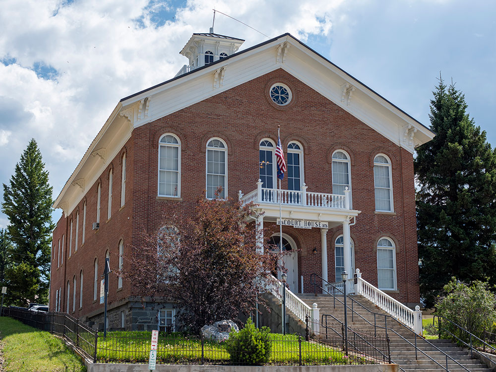
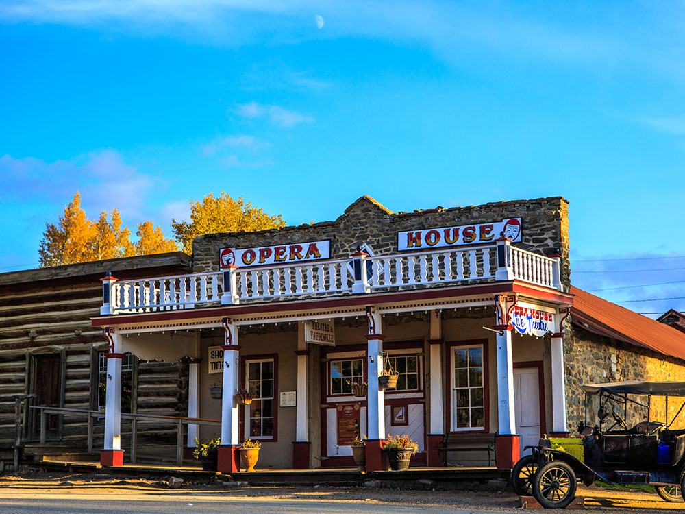

Ghost town and National Historic Landmark preserving Old West period buildings that have been added to the National Register of Historic Places
General Information
From Bozeman, MT (66 miles): Head west on W Olive St toward S 5th Ave. Turn right onto S 8th Ave. Turn left onto US-191 S/W Main St. Continue onto MT-84 W/Norris Rd. Turn left onto US-287 S. Turn right onto MT-287 N/W Main St. Turn right onto Van Buren St.
Overview
Virginia City is a historic gold rush town in southwestern Montana, in the Alder Gulch, and it was the capital of Montana Territory from 1865 to 1875. It is a National Historic Landmark with more than 200 preserved nineteenth-century buildings along its dusty main street, and it is one of the best-preserved frontier towns in the West. Alder Gulch produced about $30 million in gold in its first years, and the town's story includes vigilantes, outlaws, and the birth of the territory.
Visitors come to Virginia City to walk the boardwalks of Wallace Street, to visit the Boot Hill cemetery, and to see a play at the Virginia City Opera House, home of the Virginia City Players, the oldest professional summer theater in the West. They also come for the Bale of Hay Saloon, for the Fairweather Inn, and for the neighboring Nevada City Open Air Museum.
History
Gold was discovered at Alder Gulch in May 1863, and within a year, more than 10,000 people were living in the gulch. The town of Virginia City, named for Virginia, was founded in 1863, and it soon became the center of the territory, and in 1865 became the capital of the new Montana Territory. A wave of crime and violence led to the formation of vigilantes in December 1863, who hanged at least 21 suspected road agents, including Sheriff Henry Plummer. The capital moved to Helena in 1875, and the placer gold gave out, leaving a small town that preserved its buildings. In the 1940s, the Bovey family began restoring it.
Sightseeing and Popular Landmarks
Wallace Street is lined with false-front buildings, such as the Content Corner, the Bale of Hay Saloon, and the Fairweather Inn, and many of them are open as shops, restaurants, and museums. Boot Hill, a cemetery on a hill above the town, is the burial place of five men hanged by the vigilantes, and the Thompson-Hickman County Library and Museum has a large collection of historic items. The Montana Heritage Commission's Virginia City Opera House and the Gilbert Brewery are other historic sites, and the Alder Gulch Short Line steam train goes to Nevada City.
Culture and Museums
The Virginia City Players have performed melodramas and comedies each summer since 1949, and the Opera House dates from the 1890s. The town's many museum buildings include the Rank Mercantile Store, a Chinese Joss House, and the Wells Fargo Express office, and the Montana Heritage Commission offers programs and tours. The Virginia City Fourth of July and Christmas celebrations are popular.
Parks
The area is surrounded by the Beaverhead-Deerlodge National Forest, with trails and fishing in the Gravelly and Tobacco Root Mountains, and Alder Gulch, the site of the gold rush, can be explored by car and on foot. The Madison River, Ennis Lake, and Quake Lake are within an hour, and Yellowstone National Park is about 80 miles away. Visitors can pan for gold in the creek.
Seasons and Weather
Virginia City has a high-elevation continental climate, at about 5,800 feet. Summers are warm, with highs in the 70s and 80s°F and cool nights, and winters are cold, with highs in the 20s and 30s°F and about 50 inches of snow. Most attractions open from May to September, with limited winter activity.
Things to Do
Step Into Montana's Best-Preserved Gold Rush Town
Virginia City is a National Historic Landmark and one of the most authentic Old West towns in the United States. Founded following the Alder Gulch gold strike of 1863, the town preserves dozens of original buildings and offers visitors a unique opportunity to experience Montana's frontier history.
Explore Historic Downtown Virginia City
Visitors can stroll wooden boardwalks lined with preserved nineteenth-century buildings, historic businesses, museums, restaurants, and shops. The town's remarkably intact streetscape provides a glimpse into life during Montana's gold rush era.
Visit the Virginia City Museums
Several museums throughout town showcase artifacts, photographs, and exhibits focused on mining history, pioneer life, transportation, law enforcement, and the development of Montana Territory.
Ride the Alder Gulch Shortline Railroad
This historic narrow-gauge train provides scenic rides between Virginia City and nearby Nevada City. The route travels through Alder Gulch while offering insight into the area's mining heritage and spectacular mountain scenery.
Experience Live History and Historic Performances
During the tourism season, visitors can enjoy living history demonstrations, theatrical productions, historic reenactments, and guided tours that bring the stories of miners, merchants, vigilantes, and settlers to life.
Visit Nearby Nevada City
Just a short distance from Virginia City, Nevada City features a living history museum with restored historic buildings, antique collections, and exhibits that complement the Virginia City experience and provide additional insight into Montana's frontier past.
Learn About the Alder Gulch Gold Rush
Virginia City was established after one of the richest placer gold discoveries in North American history. Interpretive displays throughout the community tell the story of prospectors, entrepreneurs, and pioneers who transformed the region during the 1860s.
Top Trails
Virginia City to Nevada City Trail
Length: Approximately 1.5 miles one way
Elevation Gain: Minimal
Difficulty: Easy
This easy walking trail connects Virginia City and Nevada City while following portions of historic Alder Gulch. Visitors enjoy scenic views and opportunities to explore both historic communities without driving.
Alder Gulch Historic Trail
Length: Varies by route
Elevation Gain: Minimal to Moderate
Difficulty: Easy
This trail system follows portions of the historic mining district where the 1863 gold discoveries occurred. Interpretive opportunities throughout the area help visitors understand the significance of Alder Gulch in Montana history.
Historic Virginia City Walking Tour
Length: Approximately 1 mile or less
Elevation Gain: Minimal
Difficulty: Easy
A self-guided walking tour highlights many of Virginia City's most important historic buildings, museums, businesses, and landmarks. The route provides an excellent introduction to the town's preserved frontier architecture.
Baldy Mountain Trail
Length: Varies by route
Elevation Gain: Significant
Difficulty: Challenging
Hikers are rewarded with panoramic views of Alder Gulch, the Madison Valley, and surrounding mountain ranges. The trail is popular among visitors seeking a more strenuous outdoor adventure near Virginia City.
Summit Ridge Trail
Length: Varies
Elevation Gain: Moderate to Significant
Difficulty: Moderate to Challenging
This scenic route traverses nearby ridgelines and offers expansive views of southwest Montana's mountain landscapes, valleys, and historic mining country.
Sources: Official Virginia City tourism information covering historic attractions, museums, train rides, events, walking tours, and Gold Rush history.
https://virginiacity.com/Virginia City, Montana Official Tourism Site
Additional historical information regarding Virginia City's role in the Alder Gulch Gold Rush, preserved historic district, museums, and visitor experiences.
https://en.wikipedia.org/wiki/Virginia_City,_MontanaVirginia City, Montana History
Supplemental visitor information covering Nevada City, the Alder Gulch Shortline Railroad, historic walking tours, and regional recreation opportunities.
https://visitmt.com/places-to-go/cities-and-towns/virginia-cityVisit Montana - Virginia City
In May 1863, a group of prospectors were headed toward the Yellowstone River and instead came upon a party of the Crow tribe and was forced to return to Bannack. On May 26, 1863, Bill Fairweather and Henry Edgar discovered gold near Alder Creek. The prospectors could not keep the site a secret and were followed on their return to the gold bearing site. A mining district was set up in order to formulate rules about individual gold claims. On June 16, 1863 under the name of "Verina" the township was formed a mile south of the gold fields. The name was intended to honor Varina Howell Davis, the first and only First Lady of the Confederate States of America during the American Civil War. Verina, although in Union territory, was founded by men whose loyalties were thoroughly Confederate. Upon registration of the name, a Connecticut judge, G. G. Bissell, objected to their choice and recorded it as Virginia City.
In the 1940s, Charles and Sue Bovey began buying the town, putting much needed maintenance into failing structures. The ghost town of Virginia City began to be restored for tourism in the 1950s. The Boveys operated the town as an open-air museum complete with artifacts and living history enactments. Of the nearly three hundred structures in town, almost half were built prior to 1900. Buildings in their original condition with Old West period displays and information plaques stand next to presently active restaurants, gift shops, and other businesses. The town received National Historic Landmark status in 1962, and many of its buildings have been added to the National Register of Historic Places.
Virginia City also has a Boothill Cemetery. The 2 ft 6 in (762 mm) narrow gauge Alder Gulch Short Line Railroad transports passengers by rail to the nearby ghost town of Nevada City, Montana, and back.
This article uses material from Wikipedia as well as information from official tourism and institutional sources. Key references include Virginia City Chamber of Commerce, Montana Heritage Commission, Virginia City Players, Montana Office of Tourism, and National Weather Service Missoula. Wikipedia material is from the articles "Virginia City, Montana" and "Alder Gulch", and is available under the Creative Commons Attribution-Share-Alike License 3.0.

